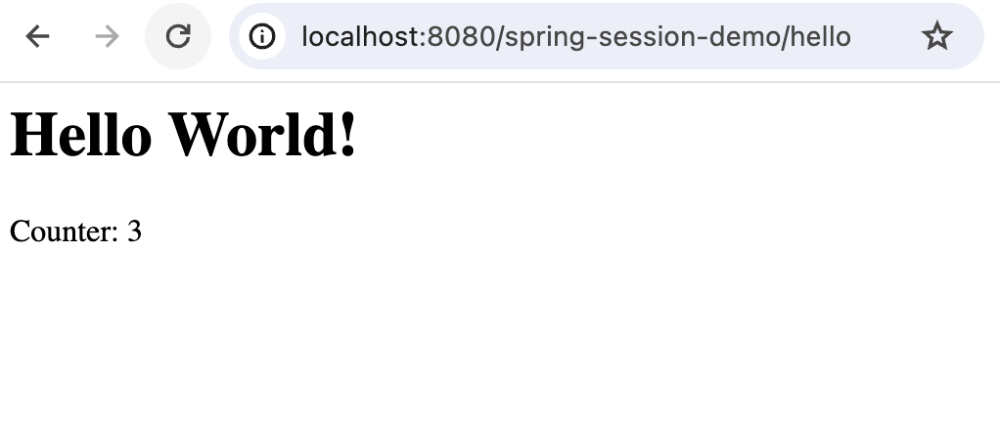

This section dives into the Coherence Spring Session module. It explains how to use Coherence’s support for Spring Session.
1. Getting Started
In this chapter you will learn how to configure Coherence as an HTTP session store using Spring Session.
For a Spring Boot servlet application, use coherence-spring-session-boot-starter with an explicit Coherence runtime
and your servlet web dependencies, as shown in Spring Boot Session Support.
The starter supplies the general Coherence starter, this session library and Boot Session, and enables HTTP-session
integration automatically when its conditions match. Non-web and reactive applications do not activate that integration.
For standalone Spring Framework applications, add the Boot-independent coherence-spring-session library and
configure Spring Session explicitly. Keep your servlet API/container and Spring web dependencies available:
<dependencies>
<dependency>
<groupId>com.oracle.coherence.spring</groupId>
<artifactId>coherence-spring-session</artifactId>
<version>5.0.0-SNAPSHOT</version>
</dependency>
<dependency>
<groupId>com.oracle.coherence.ce</groupId>
<artifactId>coherence</artifactId>
<version>26.04</version>
</dependency>
</dependencies>dependencies {
implementation("com.oracle.coherence.spring:coherence-spring-session:5.0.0-SNAPSHOT")
implementation("com.oracle.coherence.ce:coherence:26.04")
}| Coherence Spring 5.x support for Spring Session uses Coherence Community Edition (CE) 26.04. Coherence Spring does not bring in the Coherence dependency automatically; users must specify the supported Coherence CE dependency explicitly. |
For standalone configuration, make sure Coherence is enabled and then enable Spring Session using the
@EnableCoherenceHttpSession annotation. Also register the HTTP filter, for example through
AbstractHttpSessionApplicationInitializer, as shown in the plain Spring WAR sample below.
@Configuration
@EnableCoherence
@EnableCoherenceHttpSession( (1)
session = "coherence_session", (2)
cache = "spring:session:sessions", (3)
flushMode = FlushMode.ON_SAVE, (4)
sessionTimeoutInSeconds = 1800, (5)
useEntryProcessor = true (6)
)
static class CoherenceSessionConfig {
}| 1 | Enables Spring Session support for Coherence |
| 2 | Specify the name of the Coherence Session. Optional. Defaults to Coherence' default session. |
| 3 | The name of the cache to use. Optional. Defaults to spring:session:sessions. |
| 4 | The FlushMode to use. Optional. Defaults to FlushMode.ON_SAVE. |
| 5 | The session timeout. Optional. Defaults to 1800 seconds (30 minutes) |
| 6 | When doing HTTP session updates, shall we use a Coherence entry processor? The default is {@code true}. |
Dedicated storage servers need the session processors, serializers and payload classes they receive. Use the
standalone coherence-spring-session library there, with spring-security-core and spring-security-web when the
stored authentication graph requires them. A Boot storage server can combine the general Coherence starter with
this library; it does not need coherence-spring-session-boot-starter or spring-boot-session for storage. Keep
client/server dependency versions aligned. The sample server retains spring.session.store-type=none to opt out
of Coherence’s HTTP-session auto-configuration even if integration dependencies are added later.
An alternative is to set useEntryProcessor to false. This is less efficient as the entire session has to be sent over
the wire when updating session properties. The server still needs any classes and serializers required to deserialize
session data or run repository operations such as principal lookup and resetting active sessions.
2. POF Serialization
When the Session cache uses
POF serialization,
the application must register the Session types and any session payload types
with its POF context. Coherence Spring Session supplies the serializers and
PortableObject implementations listed below, but does not ship a POF
registration XML file, assign type IDs through annotations, or register these
types programmatically. Implementing PortableObject defines how a type is
serialized; it does not automatically register or discover that type.
Applications using Java serialization do not need these POF registrations.
2.1. Supported types and operations
All custom serializers in the table belong to Coherence Spring’s
coherence-spring-session module, in the package
com.oracle.coherence.spring.session.serialization.pof. Their fully qualified
class names appear in the complete configuration below. For a registered
PortableObject without an explicit serializer, ConfigurablePofContext uses
Coherence’s com.tangosol.io.pof.PortableObjectSerializer.
| Type (fully qualified class name) | Owning project / module | POF mechanism | Example ID | When needed |
|---|---|---|---|---|
|
Spring Session / |
|
2001 |
Session storage using POF. |
|
Coherence Spring / |
Implements |
4000 |
Updates to existing sessions with |
|
Coherence Spring / |
Implements |
4001 |
Calls to |
|
Coherence Spring / |
Implements |
4010 |
Principal lookup through |
|
Spring Security / |
|
3000 |
Sessions containing this authentication token, including inside a security context. |
|
Spring Security / |
|
3001 |
Sessions containing this Spring Security context implementation. |
|
Spring Security / |
|
3002 |
Authentication tokens containing this authority type. |
|
Spring Security / |
|
3003 |
Authentication tokens containing Spring Security 7 factor authorities; preserves the authority and issuance time. |
PrincipalNameExtractor is sent as part of a principal lookup query; repository
initialization does not install it. Setting useEntryProcessor=false avoids the
update processor, but does not disable the reset operation or principal lookup.
SessionResetEntryProcessor carries only the interval in milliseconds: Java
serialization uses serial version 1; POF uses a long at index 0.
2.2. Application POF configuration
Save the following complete configuration as session-pof-config.xml on the
application and server classpaths. It includes Coherence’s built-in types, the
Session storage and operation types, and the supported Spring Security payload
types. Applications that do not store Spring Security payloads can omit the
four registrations in the Spring Security group. Operation registrations are
needed when the corresponding operations in the table are used.
| Every ID below is an illustrative application mapping. These numbers are not reserved IDs or reserved ranges for Coherence Spring, Spring Session, or Spring Security. Check for collisions with all included registries and your application types, and choose unused IDs consistently on clients and servers. Preserve existing mappings for as long as stored or persisted POF data needs them; changing or reusing an ID can make that data unreadable or resolve it to the wrong type. Coordinate a data migration before changing an existing mapping. |
<?xml version="1.0" encoding="UTF-8"?>
<pof-config xmlns="http://xmlns.oracle.com/coherence/coherence-pof-config"
xmlns:xsi="http://www.w3.org/2001/XMLSchema-instance"
xsi:schemaLocation="http://xmlns.oracle.com/coherence/coherence-pof-config coherence-pof-config.xsd">
<user-type-list>
<include>coherence-pof-config.xml</include>
<!-- Session storage and operations -->
<user-type>
<type-id>2001</type-id>
<class-name>org.springframework.session.MapSession</class-name>
<serializer>
<class-name>com.oracle.coherence.spring.session.serialization.pof.MapSessionPofSerializer</class-name>
</serializer>
</user-type>
<user-type>
<type-id>4000</type-id>
<class-name>com.oracle.coherence.spring.session.SessionUpdateEntryProcessor</class-name>
</user-type>
<user-type>
<type-id>4001</type-id>
<class-name>com.oracle.coherence.spring.session.SessionResetEntryProcessor</class-name>
</user-type>
<user-type>
<type-id>4010</type-id>
<class-name>com.oracle.coherence.spring.session.support.PrincipalNameExtractor</class-name>
</user-type>
<!-- Spring Security payloads: include when these types are stored -->
<user-type>
<type-id>3000</type-id>
<class-name>org.springframework.security.authentication.UsernamePasswordAuthenticationToken</class-name>
<serializer>
<class-name>com.oracle.coherence.spring.session.serialization.pof.AuthenticationPofSerializer</class-name>
</serializer>
</user-type>
<user-type>
<type-id>3001</type-id>
<class-name>org.springframework.security.core.context.SecurityContextImpl</class-name>
<serializer>
<class-name>com.oracle.coherence.spring.session.serialization.pof.SecurityContextPofSerializer</class-name>
</serializer>
</user-type>
<user-type>
<type-id>3002</type-id>
<class-name>org.springframework.security.core.authority.SimpleGrantedAuthority</class-name>
<serializer>
<class-name>com.oracle.coherence.spring.session.serialization.pof.GrantedAuthorityPofSerializer</class-name>
</serializer>
</user-type>
<user-type>
<type-id>3003</type-id>
<class-name>org.springframework.security.core.authority.FactorGrantedAuthority</class-name>
<serializer>
<class-name>com.oracle.coherence.spring.session.serialization.pof.FactorGrantedAuthorityPofSerializer</class-name>
</serializer>
</user-type>
</user-type-list>
</pof-config>Deploy matching type-ID, class and serializer mappings to every client and
server that serializes or deserializes these objects. Each receiving process
needs the registered classes and serializer implementations on its classpath:
coherence-spring-session and its required dependencies, spring-session-core,
and spring-security-core when using the security registrations. Keep client
and server dependency versions aligned. POF registration does not supply the
classes to a remote server.
Select POF and load this configuration before starting Coherence. With cache
and client configurations that use the coherence.serializer property, set
these JVM properties on both application clients and servers:
java -Dcoherence.serializer=pof \
-Dcoherence.pof.config=session-pof-config.xml \
-jar application.jarThe named pof serializer uses ConfigurablePofContext, which loads the file
selected by coherence.pof.config. If your cache, Extend or gRPC client
configuration explicitly selects a serializer, select pof there as well;
setting the default property does not override an explicit serializer choice.
For example, the cache configuration can select POF in its <defaults> element:
<defaults>
<serializer>pof</serializer>
</defaults>The configuration covers the listed library-supported types. Add registrations
and suitable serializers for any additional application session attributes,
principal or authentication details types that POF does not already support,
including other types reachable from those objects. MapSessionPofSerializer
writes attribute values as objects, and AuthenticationPofSerializer writes
principal and details as objects. A Spring Security User principal or
WebAuthenticationDetails is an application choice and has no serializer in
the list above; the application must provide the corresponding POF support.
Other authentication token, context or authority implementations also need
their own serializers and registrations.
2.3. Hardened serialization and execution
POF registration and META-INF/coherence/security-config.xml permissions have
different purposes. POF configuration maps wire type IDs to classes and
serializers. The production Session JAR’s security metadata grants exact
serialization permissions and classifies permitted executables on Coherence
versions that enforce that policy; it does not register POF types or select a
serializer. Configure both for a hardened POF deployment, including the
application-owned types required by your session data.
The Session JAR supplies exact security metadata for MapSession, its two named
processors, PrincipalNameExtractor, UsernamePasswordAuthenticationToken,
its serializable AbstractAuthenticationToken superclass, SecurityContextImpl,
SimpleGrantedAuthority, and FactorGrantedAuthority. Only the processors and extractor are classified
as executable. Deploy the Session JAR to every receiving server and client.
Application session attributes and principal/details classes need their own
exact security metadata. MapSessionPofSerializer writes attribute values as
objects; AuthenticationPofSerializer writes principal and details as objects.
POF applications must also register these application types and their serializers.
The supplied token serializer handles UsernamePasswordAuthenticationToken
with string or erased/null credentials; it does not define a general authentication serializer.
It preserves mixed registered authority types and authentication state. Legacy
POF token data without the new authentication-state field keeps its historical
authenticated state when read.
A built-in Spring Security principal such as User is also an application choice
and is not implicitly permitted by the Session policy.
Applications choosing User and WebAuthenticationDetails must supply their
own exact security metadata, including metadata for other serialized classes
in that graph, such as `User’s authority comparator for Java serialization.
An explicit POF registration also trusts its configured serializer. In the tested
Coherence 26.10 snapshot, a registered PortableObjectSerializer can construct
and read a type absent from the XML allowlist. Review application POF
registrations and serializers independently; the Session XML does not prevent
callbacks from arbitrary explicitly registered serializers. Review the complete
application object graph for additional POF registrations before deployment.
Serialization permission, executable classification, and gRPC serializer approval
are separate checks. Select matching serializers explicitly on clients and
servers. POF requires matching registrations. A Java-format gRPC client requires
server approval for the exact java format on Coherence versions that enforce
serializer policy. Such approval is a server deployment decision; Session does
not change the global policy. Configure the approved format on the gRPC
server and select that same format on its clients.
The named reset operation does not require generated-lambda permission. This does not establish support for all application lambdas under dynamic-code deny. Security metadata does not configure endpoint authentication or TLS.
3. Spring Session Samples
This Coherence Spring source code repository provides 2 dedicated example applications, illustrating the usage of Spring Session with a Coherence-backed session repository. The first example application uses Spring Boot as well as Spring Security. The second example application uses plain Spring Framework (without Spring Boot) and deploys as a WAR file to a Servlet container (e.g. Tomcat and Jetty).
3.1. Spring Session with Spring Boot
The example application show-cases 2 use-cases:
-
Use Spring Session with embedded Coherence instances and Java serialization
-
Use Spring Session with remote Coherence instances (Coherence*Extends) and Java serialization
spring-session-demo-app uses coherence-spring-session-boot-starter, an explicit Coherence runtime and its existing
web, Security and Actuator dependencies. The separate spring-session-demo-server uses the general starter plus
the standalone session library to store and process sessions, with HTTP-session auto-configuration disabled.
The spring-session-demo-war application below uses explicit Spring configuration and the standalone library;
it contains no Spring Boot runtime and is not a Boot WAR.
Even though this demo is targeting Spring Session, we use Spring Security as well, since the authentication details are stored in the session as well. In regard to authentication, users have 2 choices:
-
A user can POST a JSON request containing the username and password in the body of the request.
-
Use basic authentication
The username is coherence, and the password rocks.
{ "username": "coherence", "password": "rocks" }Once successfully authenticated, the application will return a 2xx HTTP status with an empty body and a session cookie.
An Authentication failure, on the other hand, produces a non-2xx HTTP status with an empty body. The application has an
endpoint that responds to a GET request to the URL /hello that returns the string Hello Coherence. All endpoints
require an authenticated user using the session cookie or the username and password.
3.1.1. Start Spring Session with Embedded Coherence Instances
$ ./mvnw -Pjdk17 -pl :spring-session-demo-app -am clean installNow we are ready to run the application. Let’s launch 2 instances, one listening on the pre-configured port
8090, and the other one on port 8091.
$ java -jar samples/spring-session-demo/spring-session-demo-app/target/spring-session-demo-app-5.0.0-SNAPSHOT.jar
$ java -jar samples/spring-session-demo/spring-session-demo-app/target/spring-session-demo-app-5.0.0-SNAPSHOT.jar --server.port=80913.1.2. Spring Session with Remote Coherence Instances
In this variation of the example, we will start 1 central Coherence Server and the application will access that remote Coherence instance as a Coherence*Extend client.
$ ./mvnw -Pjdk17 -pl :spring-session-demo-server -am clean install $ ./mvnw -Pjdk17 -pl :spring-session-demo-app -am clean installNow we are ready to run the application. We will activate the coherence-client Spring Boot profile as well:
$ java -jar samples/spring-session-demo/spring-session-demo-server/target/spring-session-demo-server-5.0.0-SNAPSHOT.jar
$ java -jar samples/spring-session-demo/spring-session-demo-app/target/spring-session-demo-app-5.0.0-SNAPSHOT.jar --spring.profiles.active=coherence-clientBy default, Coherence Spring Session uses a Coherence Entry Processor to perform updates to the persisted HTTP Session. This will prevent the entire session to be sent over the wire. A drawback of that approach is that the Coherence instance needs to be aware of Coherence Spring classes for serialization purposes.
Alternatively, set coherence.spring.session.use-entry-processor=false (the default is true) in
spring-session-demo-app to send the entire session for ordinary updates. Keep the server’s session library and
payload dependencies: stored authentication graphs, deserialization, principal lookup and reset operations still
require their classes and serializers. Disabling the update processor does not remove those requirements.
3.1.3. Accessing the REST Endpoints
$ curl -i -c cookie.txt \
-H "Accept: application/json" \
-H "Content-Type:application/json" \
-X POST --data '{"username": "coherence", "password": "rocks"}' \
"http://localhost:8090/login" $ curl -i -b cookie.txt \
-H "Accept: application/json" \
-H "Content-Type:application/json" \
-X GET "http://localhost:8090/hello"3.1.4. Spring Session Actuator
Using Spring Boot’s Actuator endpoints, we can introspect the session using the
Sessions actuator at
localhost:8090/actuator/sessions?username=coherence.
coherence $ curl -i -b cookie.txt \
-H "Accept: application/json" \
-H "Content-Type:application/json" \
-X GET "http://localhost:8090/actuator/sessions?username=coherence"3.2. Spring Session with plain Spring Framework
While most new Spring applications are written using Spring Boot, there are certainly many applications that use the Spring Framework, only. Therefore, the following example uses plain Spring Framework without any Spring Boot and deploys as a WAR file to a Servlet container such as Tomcat or Jetty. The application will expose one endpoint that displays a simple counter that is incremented with each request and stored in the HTTP Session that is in return backed by Coherence.
Coherence Spring 5.0.0-SNAPSHOT is using the Jakarta EE namespace. For Java EE (javax.*), please use
Coherence Spring 3.3.x. Therefore, chose the appropriate version of the Servlet container accordingly.
|
This example uses a separate Coherence server instance to which the application will connect to using Coherence*Extend.
Furthermore, Coherence POF
is used for serialization. We will re-use the Coherence server from the spring-session-demo-server Maven module. This
will start 1 central Coherence server instance and the application will access that remote Coherence instance as a
Coherence*Extend client. In order to build the server application, execute the following in the root directory of the
Coherence Spring source code repository:
$ ./mvnw -Pjdk17 -pl :spring-session-demo-server -am clean installNext, we will build the client application:
$ ./mvnw -Pjdk17 -pl :spring-session-demo-war -am clean installThe Coherence-specific configuration of the client is fairly straight-forward and mostly
contained in the Spring configuration class CoherenceSessionConfig:
@Configuration
@EnableCoherence (1)
@EnableCoherenceHttpSession( (2)
cache = "spring:session:sessions",
flushMode = FlushMode.ON_SAVE,
sessionTimeoutInSeconds = 1800,
useEntryProcessor = false
)
public class CoherenceSessionConfig
extends AbstractHttpSessionApplicationInitializer { (3)
@Bean
public SessionConfigurationBean sessionConfigurationBeanDefault() { (4)
final SessionConfigurationBean sessionConfigurationBean =
new SessionConfigurationBean();
sessionConfigurationBean.setType(SessionType.CLIENT); (5)
sessionConfigurationBean.setConfig("remote-cache-config.xml"); (6)
return sessionConfigurationBean;
}
}| 1 | Enable Coherence Spring |
| 2 | Enable the Spring Session support for Coherence + you can specify several optional parameters |
| 3 | Extend AbstractHttpSessionApplicationInitializer to register the springSessionRepositoryFilter |
| 4 | Create a SessionConfigurationBean to configure the Coherence Session |
| 5 | Set the session type to CLIENT |
| 6 | Set the Coherence configuration file to remote-cache-config.xml |
The Coherence-specific remote-cache-config.xml configures the ExtendTcpCacheService and creates a cache mapping
for the cache spring:session:sessions to the remote-cache-scheme that uses the ExtendTcpCacheService.
Now we are ready to run the application. First, we will start the server. The server application uses Spring Boot and by activating a custom Spring Boot profile, Coherence will be started with POF serialization enabled:
Keep the sample’s application-owned pof-config.xml on both client and server classpaths. This WAR stores a simple
counter; the Boot application’s Java-serialized authentication graph is a separate sample path. Applications using
POF for authentication must add the payload registrations described in POF Serialization.
<cache-config xmlns:xsi="http://www.w3.org/2001/XMLSchema-instance"
xmlns="http://xmlns.oracle.com/coherence/coherence-cache-config"
xsi:schemaLocation="http://xmlns.oracle.com/coherence/coherence-cache-config coherence-cache-config.xsd">
<defaults>
<serializer>pof</serializer>
</defaults>
... $ java -jar samples/spring-session-demo/spring-session-demo-server/target/spring-session-demo-server-5.0.0-SNAPSHOT.jar --spring.profiles.active=pofFor the client application, deploy the generated spring-session-demo.war together with the sample’s external
Tomcat Context file. This sample forwards to a JSP after updating the session. On Tomcat 11.0.26, the default
suspendWrappedResponseAfterForward=true finishes the response before Spring Session can send its initial cookie;
successive requests then each show Counter: 1. The supplied Context sets this attribute to false, allowing
the wrapped response to close and send the cookie after the forward. See Tomcat’s
Context attributes and
context naming rules.
<Context suspendWrappedResponseAfterForward="false" />Use an initialized Tomcat 11 installation with the standard Catalina engine, localhost host and webapps
appBase. Stop that instance before copying these files. Run from the repository root with Java 17 or 21 selected:
export CATALINA_HOME=/path/to/apache-tomcat-11.0.26
export CATALINA_BASE="$CATALINA_HOME"
mkdir -p "$CATALINA_BASE/conf/Catalina/localhost" "$CATALINA_BASE/webapps"
cp samples/spring-session-demo/tomcat/spring-session-demo.xml \
"$CATALINA_BASE/conf/Catalina/localhost/spring-session-demo.xml"
cp samples/spring-session-demo/spring-session-demo-war/target/spring-session-demo.war \
"$CATALINA_BASE/webapps/spring-session-demo.war"
"$CATALINA_HOME/bin/catalina.sh" runIf using a separate initialized Tomcat instance directory, set CATALINA_BASE to that directory instead.
The matching spring-session-demo.xml and spring-session-demo.war base names select /spring-session-demo.
The Context deliberately omits path and docBase: Tomcat derives them from the filenames and standard appBase.
This setting applies only to this application. Keep it in the external Context file when redeploying the WAR.
The application starts and connects to the Coherence server. Access it at

The invoked HelloController will display a simple counter that is incremented with each request and whose value is
stored in the HTTP Session.
Use a fresh cookie jar in another terminal to check normal cookie delivery and counter progression:
curl -i -c war-cookie.txt http://localhost:8080/spring-session-demo/hello
curl -i -b war-cookie.txt http://localhost:8080/spring-session-demo/hello
curl -i -b war-cookie.txt http://localhost:8080/spring-session-demo/helloThe first response must return Set-Cookie: SESSION=… with Path=/spring-session-demo; the three pages show
Counter: 1, Counter: 2 and Counter: 3 under the same session. Use Ctrl-C in the Tomcat terminal to stop it.
| This configured deployment is validated on Java 17/21 with Tomcat 11.0.26, Spring Session 4.0.5 and Coherence 26.04, using the real JSP WAR and a separate POF storage server. The default Tomcat deployment remains affected. The setting is specific to Tomcat’s servlet-forward handling; it does not establish behavior on other servlet containers. The Boot application’s Java-serialization login/session path above is validated separately. |
4. Session Expiration Strategies
When dealing with the expiration of cache entries, you generally have 2 options in Coherence:
-
Set the expiration time for each put operation explicitly
-
Configure cache expiration on a per-cache-basis in your
coherence-cache-config.xmlfile
4.1. Setting the Expiration Time for Each Put Operation
When you define a session timeout via the application, for example @EnableCoherenceHttpSession(sessionTimeoutInSeconds = 1000),
the session expiration will be set for each put-operation in CoherenceIndexedSessionRepository.
If not set in the application, Coherence Spring will expire HTTP session caches in 1800 seconds (30 minutes).
|
As is the nature with Spring, you have multiple ways to set the session timeout:
-
Using the
@EnableCoherenceHttpSessionannotation, e.g.@EnableCoherenceHttpSession(sessionTimeoutInSeconds = 6000) -
By extending
CoherenceHttpSessionConfigurationand overriding thesetMaxInactiveIntervalInSecondsmethod. In that case, you would not be using the@EnableCoherenceHttpSessionannotation but instead use@Configurationand@Import(MyCustomCoherenceHttpSessionConfiguration.class) -
By declaring a
SessionRepositoryCustomizer<CoherenceIndexedSessionRepository>bean, e.g.:
@Bean
public static SessionRepositoryCustomizer<CoherenceIndexedSessionRepository> sessionRepositoryCustomizer() {
return (sessionRepository) -> {
sessionRepository.setDefaultMaxInactiveInterval(Duration.ofSeconds(120));
};
}If you are using Spring Boot, you can also set the session timeout in your application.properties or
application.yaml file using the spring.session.timeout property: spring.session.timeout = 10m.
4.2. Configuring the Expiration Time in coherence-cache-config.xml
If you rather prefer defining the session expiration timeouts in your coherence-cache-config.xml file, you
should set the session timeout in the application to 0, for instance @EnableCoherenceHttpSession(sessionTimeoutInSeconds = 0).
That way, put operations will never try to set an expiration value for the cache entry. You can then set the expiry-delay
cache configuration element for your cache in the coherence-cache-config.xml file.
In regard to the question, whether one strategy or the other strategy is preferable: It is mostly a
matter of preference. You do have, however, a bit more control when configuring expiration logic via the
coherence-cache-config.xml file, as you have the ability to define custom eviction policies.
For more information, please consult the respective chapter on Controlling the Growth of a Local Cache in the Coherence reference guide.
| The underlying expiry delay parameter in Coherence is defined as an integer and is expressed in milliseconds. Therefore, the maximum amount of time can never exceed Integer.MAX_VALUE (2147483647) milliseconds or approximately 24 days. |
5. Using HttpSessionListener
If you plan on use the HttpSessionListener interface, you can register a HttpSessionListener bean in your Spring
configuration. The HttpSessionListener will be registered with the ServletContext and will be notified of session
creation and destruction events.
@Bean
MyHttpSessionListener myHttpSessionListener() {
return new MyHttpSessionListener();
}